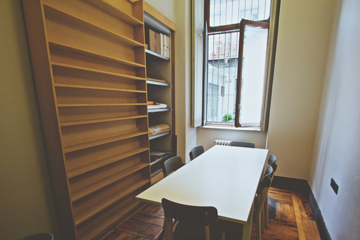
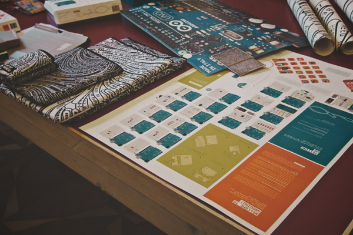
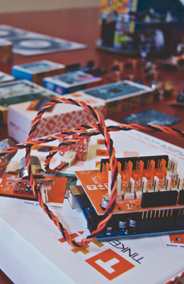
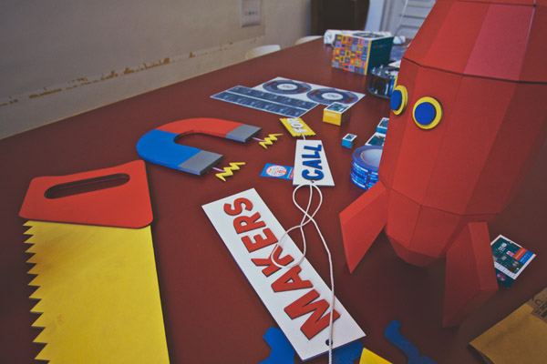

- Event Listeners
Giorgio Olivero
Giorgio Olivero is a founder and designer at ToDo, a visual branding and identity agency. Coming late into the design field at the age of 28, Giorgio has accomplished an impressive deal since then by starting his own design studio ToDo that created the visual brand of Arduino. ToDo designed everything from the packaging of the Arduino Uno, to the new interface of Arduino’s latest IDE, to communicate Arduino as a product not just for engineers, but a simple prototyping tool to be used by anyone with a creative idea.
"It is a rare privilege to design the visual identity for something such as Arduino."
- 
- 
- 
- 
“Working with arduino in those early days was like flying a plane while building it.”
This interview was conducted by Aaron La Lau and Sean Brouwer
Intro
Ivrea
Arduino Identity
Starter Kit
Future of Arduino
0:00
/
0:00